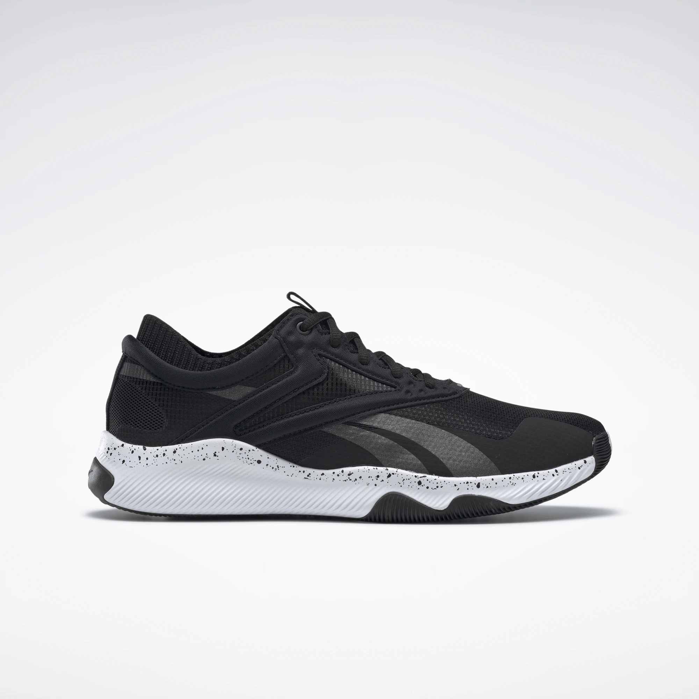

Кроссовки REEBOK HIIT

Описание товара
УНИВЕРСАЛЬНЫЕ КРОССОВКИ ДЛЯ ВЫСОКОИНТЕНСИВНЫХ ТРЕНИРОВОК
Характеристики товара
- Верх из сетчатого материала
- Идеально для высокоинтенсивных тренировок
- Кроссовки дают ощущение мягкой поддержки
- Подошва из легкого ЭВА для амортизации
- Петелька на язычке для удобства
- Страна-производитель: Вьетнам
- Материал: 60% Текстиль / 40% Синтетика
- Цвет модели: Black / White / None
- Номер модели: EH3076
Подробное описание товара
Не снижай темп прыжков, выпадов и берпи.
Мужские кроссовки для высокоинтенсивных тренировок
обеспечат комфорт и поддержку во время
самых динамичных сессий. Сетчатый верх с плотной окантовкой
создает надежную фиксацию стопы. Гибкая подошва способствует
хорошему сцеплению со скользким полом спортзала.